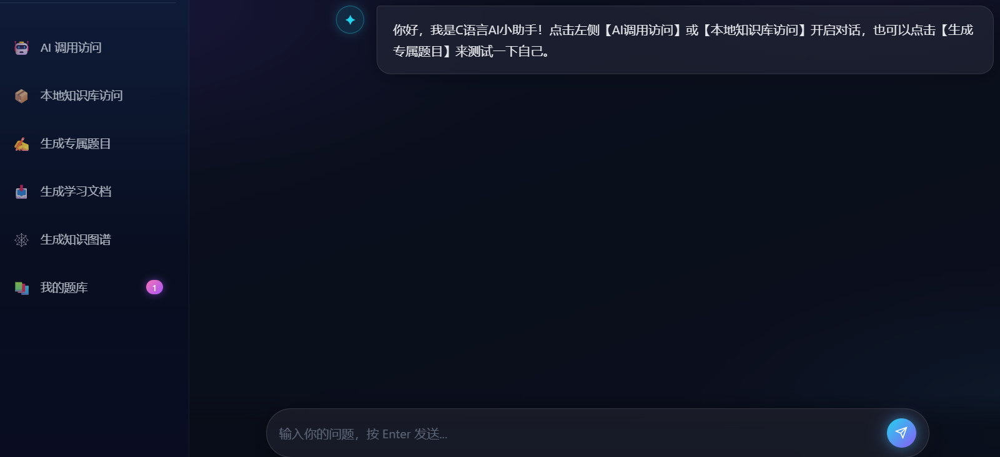

C LANGUAGE · AI STUDY COMPANION
你的AI小助手
辅助你更好的掌握知识点
围绕 C 语言学习打造的一站式 AI 学习伙伴：从双模智能问答、自有课件检索，到自动出题、AI 批改、知识星图与学情看板，十项能力贯通「学 · 练 · 记 · 析 · 复」完整闭环，让每一个知识点都有迹可循。

🖼️
图片占位区
将图片放到 img/image.png 即可自动展示
（或修改上方 img 标签的 src 地址）
10项核心能力覆盖 学 · 练 · 记 · 析 · 复
2种 AI 模型魔搭在线 + Ollama 本地离线
6个功能页面对话 / 题库 / 课件 / 星图 / 看板
100%本机数据课件与学习记录不出本机
I
六大核心功能
SIX CORE FEATURES · 学习闭环的起点
01
🤖
AI 调用访问 联网模式
对接魔搭 ModelScope 在线大模型（Qwen3.5-35B-A3B），在输入框提交 C 语言问题即可联网获取解答，回答流式逐字呈现，适合查询知识点、排查代码 BUG、理解语法逻辑。
这段代码为什么段错误？🤔
数组越界啦！第 12 行的循环条件 i <= 10 应改为 i < 10 …
02
📦
本地知识库访问 离线模式
对接本机 Ollama 部署的 Qwen 模型，无需联网；思考过程在服务端过滤，页面只显示最终答案。可临时导入一份 PDF 作为本轮问答的补充上下文，适合无网环境自学与课后作业。若需长期保存、多文档管理与按问题检索，请使用下方的「课件知识库」。
📄 单份 PDF
🔒 纯离线
⚡ 流式回答
03
✍️
生成专属题目
输入 C 语言目标知识点（循环、指针、数组等），由当前模型生成配套练习题，可下载为 Markdown 试卷，也可一键加入题库，用于学完知识点后的自测巩固。
04
📥
生成学习文档 AI 总结报告
勾选近 7 天的历史问答记录，由 AI 生成六段式学习总结报告：学习概况、知识点掌握分析、薄弱点诊断、学习建议、逐题分析、下周计划，并自动导出 Markdown 到本地。
05
🕸️
生成知识图谱 知识星图
从当前会话抽取知识点与关系，在独立页面以「三层星轨」呈现：中心为核心概念、内环为关联知识点、外环为易错点。支持搜索聚焦、点击查看解释、建议学习路径与高清 PNG 导出；按主题分会话提问即可保持结构清晰。
06
📚
我的题库 错题收藏
AI 习题与问答中的重点题目可一键「加入题库」。每张卡片可展开作答并由 AI 自动批改，记录正确率与掌握度，按艾宾浩斯间隔生成复习队列；支持待复习 / 错题 / 已掌握筛选，主界面还会提醒今日待复习题数。
指针与数组内存布局 · 待复习 去练习 →
for 循环边界改错 · 错题 AI 已批改
结构体指针编程 · 已掌握 ✕ 删除
II
进阶能力 · 新增模块
ADVANCED MODULES · 让学习数据形成闭环
07
🗂️
课件知识库
OFFLINE RAG · 自有资料检索增强
上传自己的 C 语言课件（PDF / Word / TXT / Markdown），系统自动解析、按段落切块并持久保存到本机。提问时先检索出与问题最相关的若干片段，再连同问题交给本地模型，让回答优先依据课件内容并说明来源。全程离线，课件不会发往云端。
📄 PDF
📝 DOCX
🔤 TXT / MD
💾 本地持久化
🔒 纯离线
指针 · 第3章92%
数组 · 第5章74%
内存管理53%
08
每次问答与出题自动留痕，保留最近 7 天。可按关键词搜索、展开查看完整解答，把旧问题一键带回输入框继续追问；同时也是生成学习总结报告的数据来源。
今天 指针与数组的区别
昨天 malloc 为什么要 free
3 天前 生成一份循环练习题
09
按主题新建、切换、删除会话，首问自动命名，刷新后聊天仍在。问答与出题携带最近 6 轮上下文，省略式追问也能接上；图谱按当前会话生成，主题不再串线。
指针和数组有什么区别？
数组名多数情况会退化为首元素指针…
那 sizeof 呢？
✓ 自动接续上文
10
📊
学习看板
DASHBOARD · 学情可视化与复习提醒
汇总提问、练习与错题数据，展示累计提问、活跃天数、练习正确率、今日待复习四项指标，配合近 8 周热力图、7 日趋势、知识点掌握分布与薄弱点 TOP5；按艾宾浩斯间隔给出今日复习队列，一键导出学习简报。纯前端渲染，数据不出本机。
128累计提问
23活跃天数
82%练习正确率
5今日待复习
START YOUR LEARNING LOOP
把每一次提问，变成看得见的进步
提问 → 依据课件答疑 → 自动出题 → 作答批改 → 错题复习 → 学情分析，一条链路全部留在本机。